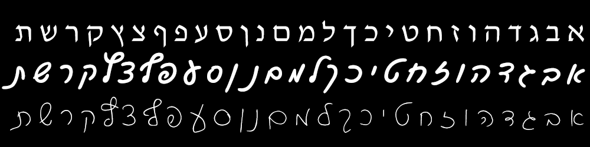

Script (PRINT vs cursive writing)
In order to be able to write as well as read, we present you with the script alphabet
in Hebrew. You should practice writing the letters, so that you will be able to answer the questions and complete the sentences
in writing as well as reading!
